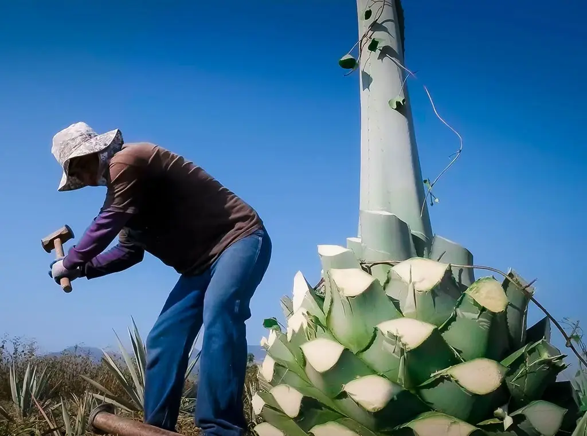
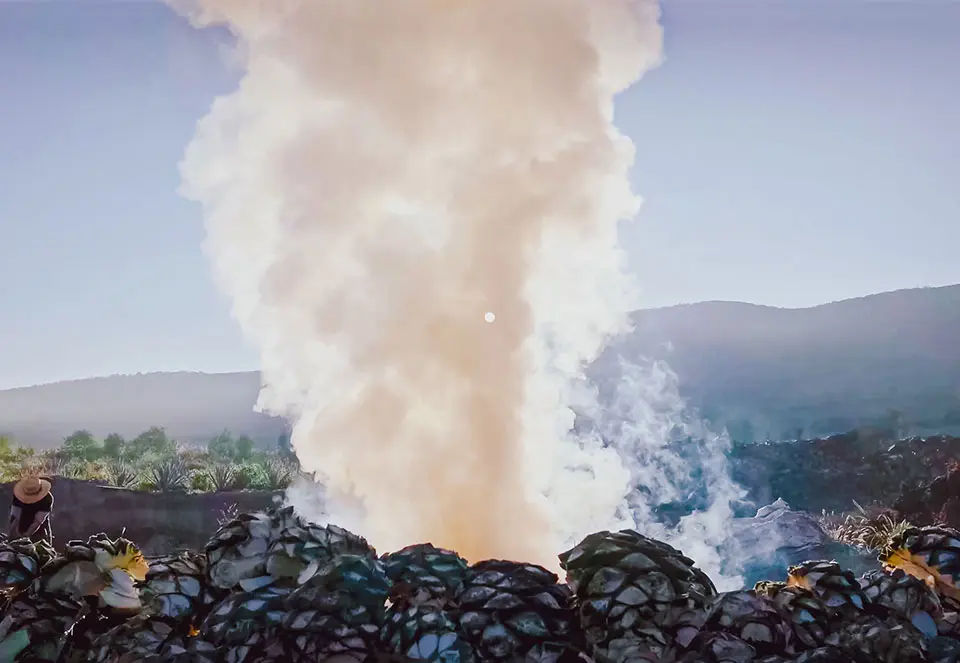
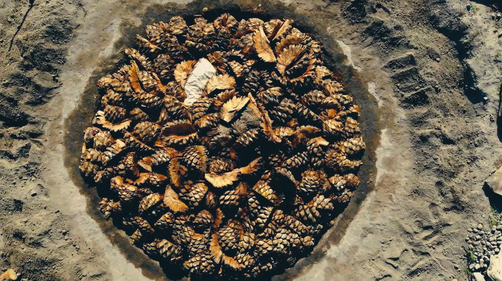

Field
25 October 2022About 150 espadín agave, cut by hand in the fields of Benito Ruiz and his son Francisco.

Fire
28 – 31 OctoberA pit oven, volcanic stone, four days of slow heat.

Stone
1 – 9 NovemberThe tahona, a horse named Isabella, seven days of wild fermentation.

Copper
9 & 23 NovemberTwo distillations. Clay-sealed copper, a wood fire, above 53% off the still.
Oak
December 2022 · California oakSet apart and laid in the barrel. It has not left it since.